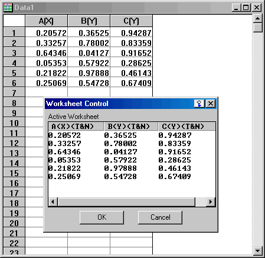

Accessing a WorksheetControl Control with Origin C
The WksControl example demonstrates how to access a worksheet control in a Dialog Builder resource. To access the worksheet control in the Worksheet Control dialog below the example program uses the Origin C WorksheetControl class. The example dialog is launched by executing the function LaunchWksControl in the source file WksControl.cpp found in this zip file, under the \Dialog Builder\WksControl subfolder.

To launch the Worksheet Control dialog above:
- Open the source file WksControl.cpp in Code Builder.
- Add WksControl.cpp to the Code Builder workspace by activating it and pressing the CTRL + W keys.
- Build WksControl.cpp by clicking the Build button .
- In Origin create some worksheets each having a different number of columns. Vary the column designations, formats, and display and enter some varied data.
- Type LaunchWksControl in the Script Window or LabTalk Console and press the ENTER key.
- With the Worksheet Control dialog open and visible browse around activating different worksheets and notice how the worksheet control in the dialog changes.